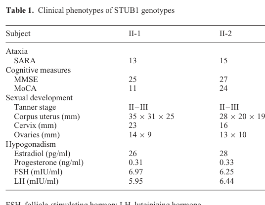

Cerebellar ataxia-hypogonadism syndrome (Gordon Holmes syndrome) is a rare, genetically heterogeneous autosomal recessive neurodegenerative-neuroendocrine disorder defined by the combination of progressive cerebellar ataxia and hypogonadotropic hypogonadism, frequently accompanied by cognitive decline/dementia, additional movement disorders (chorea, parkinsonism, dystonia), and cerebral white-matter changes. Most cases are caused by biallelic loss-of-function variants in the ubiquitin/proteostasis genes RNF216 (an RBR-class E3 ubiquitin ligase) and STUB1 (CHIP), with a digenic RNF216/OTUD4 form, while biallelic PNPLA6 (neuropathy target esterase) variants produce an allelic continuum that overlaps with Boucher-Neuhauser syndrome (ataxia, hypogonadotropic hypogonadism, and chorioretinal dystrophy). The disorder belongs to a clinical continuum of neurodegenerative ataxias with reproductive endocrine failure first described by Gordon Holmes in 1908.
Ask a research question about Cerebellar Ataxia-Hypogonadism Syndrome. OpenScientist will conduct autonomous deep research using the Disorder Mechanisms Knowledge Base and PubMed literature (typically 10-30 minutes).
Do not include personal health information in your question. Questions and results are cached in your browser's local storage.
name: Cerebellar Ataxia-Hypogonadism Syndrome
creation_date: "2026-06-04T12:00:00Z"
category: Mendelian
description: >-
Cerebellar ataxia-hypogonadism syndrome (Gordon Holmes syndrome) is a rare,
genetically heterogeneous autosomal recessive neurodegenerative-neuroendocrine
disorder defined by the combination of progressive cerebellar ataxia and
hypogonadotropic hypogonadism, frequently accompanied by cognitive
decline/dementia, additional movement disorders (chorea, parkinsonism,
dystonia), and cerebral white-matter changes. Most cases are caused by
biallelic loss-of-function variants in the ubiquitin/proteostasis genes
RNF216 (an RBR-class E3 ubiquitin ligase) and STUB1 (CHIP), with a digenic
RNF216/OTUD4 form, while biallelic PNPLA6 (neuropathy target esterase)
variants produce an allelic continuum that overlaps with Boucher-Neuhauser
syndrome (ataxia, hypogonadotropic hypogonadism, and chorioretinal dystrophy).
The disorder belongs to a clinical continuum of neurodegenerative ataxias with
reproductive endocrine failure first described by Gordon Holmes in 1908.
disease_term:
preferred_term: Cerebellar Ataxia-Hypogonadism Syndrome
term:
id: MONDO:0008935
label: cerebellar ataxia-hypogonadism syndrome
synonyms:
- Gordon Holmes syndrome
- Gordon-Holmes syndrome
- ataxia-hypogonadotropic hypogonadism
- ataxia, dementia, and hypogonadotropism
references:
- reference: PMID:25299038
title: "PNPLA6 Disorders."
tags:
- GeneReviews
pathophysiology:
- name: Disordered Ubiquitination and Impaired Protein Quality Control
description: >
The core molecular lesion in RNF216-, OTUD4-, and STUB1/CHIP-related Gordon
Holmes syndrome is disruption of the ubiquitin-proteasome system and protein
quality control. RNF216 is an RBR/RING-class E3 ubiquitin ligase that
attaches ubiquitin to substrates (including upstream activators of NF-kB
signaling), marking them for proteasome-mediated degradation; OTUD4 is a
partnering deubiquitinase. STUB1 encodes CHIP, a co-chaperone E3 ligase
central to protein quality control. Biallelic loss-of-function (or
loss of critical E3 activity) in these enzymes impairs ubiquitination and
turnover of client proteins. The digenic RNF216/OTUD4 form reflects an
epistatic interaction within a shared pathway.
genes:
- preferred_term: RNF216
term:
id: hgnc:21698
label: RNF216
- preferred_term: OTUD4
term:
id: hgnc:24949
label: OTUD4
- preferred_term: STUB1
term:
id: hgnc:11427
label: STUB1
molecular_functions:
- preferred_term: ubiquitin protein ligase activity
term:
id: GO:0061630
label: ubiquitin protein ligase activity
modifier: DECREASED
biological_processes:
- preferred_term: protein ubiquitination
term:
id: GO:0016567
label: protein ubiquitination
modifier: DECREASED
- preferred_term: ubiquitin-dependent protein catabolic process
term:
id: GO:0006511
label: ubiquitin-dependent protein catabolic process
modifier: DECREASED
evidence:
- reference: PMID:23656588
reference_title: "Ataxia, dementia, and hypogonadotropism caused by disordered ubiquitination."
supports: SUPPORT
evidence_source: HUMAN_CLINICAL
snippet: "Digenic homozygous mutations in RNF216 and OTUD4, which encode a ubiquitin E3 ligase and a deubiquitinase, respectively, were found in three affected siblings in a consanguineous family."
explanation: >
The landmark NEJM study identifies biallelic RNF216 and digenic
RNF216/OTUD4 mutations in ubiquitin pathway enzymes as the cause.
- reference: PMID:23656588
reference_title: "Ataxia, dementia, and hypogonadotropism caused by disordered ubiquitination."
supports: SUPPORT
evidence_source: HUMAN_CLINICAL
snippet: "These findings link disordered ubiquitination to neurodegeneration and reproductive dysfunction"
explanation: >
Establishes disordered ubiquitination as the unifying mechanism linking
neurodegeneration to reproductive endocrine failure.
- reference: PMID:24113144
reference_title: "Ataxia and hypogonadism caused by the loss of ubiquitin ligase activity of the U box protein CHIP."
supports: SUPPORT
evidence_source: IN_VITRO
snippet: "Introduction of the Thr246Met mutation into CHIP results in a loss of ubiquitin ligase activity measured directly using recombinant proteins as well as in cell culture models."
explanation: >
Functional assays demonstrate that the STUB1/CHIP disease variant abolishes
E3 ubiquitin ligase activity, implicating impaired protein quality control.
downstream:
- target: Cerebellar and Hippocampal Neurodegeneration
description: >
Impaired ubiquitination leads to accumulation of toxic proteins
(ubiquitin-immunoreactive intranuclear inclusions) and progressive neuronal
loss in cerebellar pathways and hippocampus.
causal_link_type: DIRECT
evidence:
- reference: PMID:23656588
reference_title: "Ataxia, dementia, and hypogonadotropism caused by disordered ubiquitination."
supports: SUPPORT
evidence_source: HUMAN_CLINICAL
snippet: "Neuronal loss was observed in cerebellar pathways and the hippocampus; surviving hippocampal neurons contained ubiquitin-immunoreactive intranuclear inclusions."
explanation: >
Neuropathology directly links the ubiquitination defect to cerebellar and
hippocampal neurodegeneration with protein inclusions.
- target: Reproductive Endocrine Axis Dysfunction
description: >
The same ubiquitination defect impairs the hypothalamic-pituitary-gonadal
axis, producing central hypogonadotropic hypogonadism.
causal_link_type: DIRECT
evidence:
- reference: PMID:23656588
reference_title: "Ataxia, dementia, and hypogonadotropism caused by disordered ubiquitination."
supports: SUPPORT
evidence_source: HUMAN_CLINICAL
snippet: "Defects were detected at the hypothalamic and pituitary levels of the reproductive endocrine axis."
explanation: >
Endocrine phenotyping localizes the reproductive defect to hypothalamic
and pituitary levels of the HPG axis.
- name: Cerebellar and Hippocampal Neurodegeneration
description: >
Progressive loss of Purkinje cells and cerebellar pathway neurons underlies
the ataxia, while hippocampal and cortical neuronal loss contributes to
cognitive decline and dementia. Cerebellar atrophy and subcortical cerebral
white-matter hyperintensities are characteristic imaging correlates. In an
Rnf216 knockout mouse model, age- and sex-dependent microglial alterations
in hippocampus and cortex accompany learning impairments, suggesting
microglial activation/neuroinflammation as a candidate intermediate.
cell_types:
- preferred_term: Purkinje cell
term:
id: CL:0000121
label: Purkinje cell
- preferred_term: microglial cell
term:
id: CL:0000129
label: microglial cell
biological_processes:
- preferred_term: inflammatory response
term:
id: GO:0006954
label: inflammatory response
modifier: INCREASED
locations:
- preferred_term: cerebellum
term:
id: UBERON:0002037
label: cerebellum
evidence:
- reference: PMID:23656588
reference_title: "Ataxia, dementia, and hypogonadotropism caused by disordered ubiquitination."
supports: SUPPORT
evidence_source: HUMAN_CLINICAL
snippet: "Neuronal loss was observed in cerebellar pathways and the hippocampus"
explanation: >
Documents the neurodegenerative substrate (cerebellar and hippocampal
neuronal loss) for ataxia and dementia.
- reference: PMID:38164552
reference_title: "Gordon Holmes Syndrome Model Mice Exhibit Alterations in Microglia, Age, and Sex-Specific Disruptions in Cognitive and Proprioceptive Function."
supports: SUPPORT
evidence_source: MODEL_ORGANISM
snippet: "KO mice also showed age-dependent strategy and associative learning impairments with sex-dependent alterations of microglia in the hippocampus and cortex."
explanation: >
The Rnf216 knockout mouse implicates microglial alterations and
neuroinflammation in cognitive impairment, a candidate mechanistic
intermediate.
downstream:
- target: Abnormality of speech or vocalization
description: >
Cerebellar neurodegeneration disrupts motor speech and vocalization.
- target: Hemiplegia/hemiparesis
description: >
Neurodegenerative involvement can include asymmetric corticospinal motor
impairment.
- target: Personality changes
description: >
Hippocampal and broader forebrain involvement contributes to behavioral
and personality change.
- name: Reproductive Endocrine Axis Dysfunction
description: >
Central (hypogonadotropic) hypogonadism arises from dysfunction at the
hypothalamic GnRH-neuron and pituitary gonadotrope levels. Pulsatile GnRH
administration can transiently restore gonadotropin and sex-steroid
secretion early in the course, indicating a primarily hypothalamic GnRH
deficiency with a superimposed and progressive pituitary component. The
result is delayed/absent puberty, lack of secondary sexual characteristics,
and low gonadotropins and sex steroids.
cell_types:
- preferred_term: hypothalamic gonadotropin-releasing hormone neuron
term:
id: CL:0011111
label: hypothalamic gonadotropin-releasing hormone neuron
locations:
- preferred_term: pituitary gland
term:
id: UBERON:0000007
label: pituitary gland
evidence:
- reference: PMID:23656588
reference_title: "Ataxia, dementia, and hypogonadotropism caused by disordered ubiquitination."
supports: SUPPORT
evidence_source: HUMAN_CLINICAL
snippet: "Defects were detected at the hypothalamic and pituitary levels of the reproductive endocrine axis."
explanation: >
Localizes the hypogonadotropic hypogonadism to combined hypothalamic and
pituitary dysfunction.
- reference: PMID:24113144
reference_title: "Ataxia and hypogonadism caused by the loss of ubiquitin ligase activity of the U box protein CHIP."
supports: SUPPORT
evidence_source: MODEL_ORGANISM
snippet: "Loss of CHIP function in mice resulted in behavioral and reproductive impairments that mimic human ataxia and hypogonadism."
explanation: >
A CHIP-deficient mouse recapitulates the combined ataxia and reproductive
(hypogonadism) phenotype.
downstream:
- target: Hypogonadism
description: >
Hypothalamic-pituitary-gonadal axis failure manifests clinically as
hypogonadism.
- target: Abnormality of the hypothalamus-pituitary axis
description: >
The endocrine lesion localizes to hypothalamic and pituitary levels.
- target: Decreased fertility
description: >
Central hypogonadism reduces reproductive capacity.
- target: Gynecomastia
description: >
Disrupted gonadal steroid signaling can manifest as gynecomastia.
- name: PNPLA6 / Neuropathy Target Esterase Phospholipid Dysfunction
description: >
A genetically distinct arm of the ataxia-hypogonadism continuum is caused by
biallelic PNPLA6 variants. PNPLA6 encodes neuropathy target esterase (NTE),
an endoplasmic-reticulum-localized lysophospholipase regulating membrane
phospholipid homeostasis. PNPLA6 disorders span Boucher-Neuhauser syndrome
(ataxia, hypogonadotropic hypogonadism, chorioretinal dystrophy), Gordon
Holmes syndrome, spastic paraplegia type 39, Oliver-McFarlane, and
Laurence-Moon syndromes, with age-dependent, multisystem manifestations
affecting cerebellum, retina, peripheral nerves, and endocrine axes.
genes:
- preferred_term: PNPLA6
term:
id: hgnc:16268
label: PNPLA6
cellular_components:
- preferred_term: endoplasmic reticulum
term:
id: GO:0005783
label: endoplasmic reticulum
evidence:
- reference: PMID:35069422
reference_title: "Multifaceted and Age-Dependent Phenotypes Associated With Biallelic PNPLA6 Gene Variants: Eight Novel Cases and Review of the Literature."
supports: SUPPORT
evidence_source: HUMAN_CLINICAL
snippet: "A wide spectrum of neurodegenerative diseases has been associated with pathogenic variants in the PNPLA6 (patatin-like phospholipase domain-containing protein 6) gene, including spastic paraplegia type 39, Gordon-Holmes, Boucher-Neuhauser, Oliver-Mc Farlane, and Laurence-Moon syndromes."
explanation: >
Establishes PNPLA6 as a cause of the Gordon Holmes / Boucher-Neuhauser
ataxia-hypogonadism continuum.
- reference: PMID:25299038
reference_title: "PNPLA6 Disorders."
supports: SUPPORT
evidence_source: HUMAN_CLINICAL
snippet: "PNPLA6 disorders span a phenotypic continuum characterized by variable combinations of cerebellar ataxia; upper motor neuron involvement manifesting as spasticity and/or brisk reflexes; chorioretinal dystrophy associated with variable degrees of reduced visual function; and hypogonadotropic hypogonadism"
explanation: >
GeneReviews defines the PNPLA6 phenotypic continuum encompassing the
ataxia-hypogonadism syndromes.
downstream:
- target: Cerebellar and Hippocampal Neurodegeneration
description: >
PNPLA6 phospholipid dysfunction in cerebellar neurons causes progressive
cerebellar atrophy and ataxia, with cerebellar atrophy documented by MRI
in the majority of patients.
causal_link_type: DIRECT
evidence:
- reference: PMID:35069422
reference_title: "Multifaceted and Age-Dependent Phenotypes Associated With Biallelic PNPLA6 Gene Variants: Eight Novel Cases and Review of the Literature."
supports: SUPPORT
evidence_source: HUMAN_CLINICAL
snippet: "Cerebellar ataxia was observed in seven patients and spastic paraplegia in one patient. Progression of cerebellar symptoms was slow in all patients, who retained ambulation even after a mean disease duration of 15 years. Brain MRI showed cerebellar atrophy in 6/8 patients, more pronounced in superior and dorsal vermis lobules (I to VII)."
explanation: >
Directly links PNPLA6 dysfunction to cerebellar neurodegeneration with
progressive cerebellar atrophy and ataxia as the dominant phenotype.
- target: Reproductive Endocrine Axis Dysfunction
description: >
PNPLA6 dysfunction also impairs the reproductive endocrine axis, producing
hypogonadotropic hypogonadism in a substantial proportion of patients.
causal_link_type: DIRECT
evidence:
- reference: PMID:25299038
reference_title: "PNPLA6 Disorders."
supports: SUPPORT
evidence_source: HUMAN_CLINICAL
snippet: "hypogonadotropic hypogonadism (delayed puberty and lack of secondary sex characteristics). The hypogonadotropic hypogonadism occurs either in isolation or as part of anterior hypopituitarism"
explanation: >
GeneReviews confirms hypogonadotropic hypogonadism as a core feature of
PNPLA6 disorders, connecting PNPLA6 dysfunction to reproductive endocrine
axis impairment.
- target: Abnormal electroretinogram
description: >
PNPLA6-related retinal dysfunction can be detected electrophysiologically.
causal_link_type: INDIRECT_KNOWN_INTERMEDIATES
- target: Nystagmus
description: >
Retinal and cerebellar involvement can manifest with abnormal ocular
movements.
causal_link_type: INDIRECT_KNOWN_INTERMEDIATES
- target: Optic atrophy
description: >
PNPLA6-associated neuro-ophthalmologic degeneration can include optic
atrophy.
causal_link_type: INDIRECT_KNOWN_INTERMEDIATES
- target: Abnormality of retinal pigmentation
description: >
PNPLA6-related chorioretinal disease manifests with abnormal retinal
pigmentation.
causal_link_type: INDIRECT_KNOWN_INTERMEDIATES
phenotypes:
- category: Neurologic
name: Cerebellar ataxia
description: >
Progressive cerebellar ataxia (gait instability, incoordination) is a core
and near-universal feature across all genetic subtypes.
phenotype_term:
preferred_term: Cerebellar ataxia
term:
id: HP:0001251
label: Ataxia
clinical_course: PROGRESSIVE
evidence:
- reference: PMID:24113144
reference_title: "Ataxia and hypogonadism caused by the loss of ubiquitin ligase activity of the U box protein CHIP."
supports: SUPPORT
evidence_source: HUMAN_CLINICAL
snippet: "Gordon Holmes syndrome (GHS) is a rare Mendelian neurodegenerative disorder characterized by ataxia and hypogonadism."
explanation: Ataxia is one of the two defining clinical features of the syndrome.
- reference: PMID:23656588
reference_title: "Ataxia, dementia, and hypogonadotropism caused by disordered ubiquitination."
supports: SUPPORT
evidence_source: HUMAN_CLINICAL
snippet: "All patients had progressive ataxia and dementia."
explanation: All RNF216-mutation patients in the index cohort had progressive ataxia.
- category: Endocrine
name: Hypogonadotropic hypogonadism
description: >
Central hypogonadotropic hypogonadism with low/inappropriately normal
gonadotropins and low sex steroids, manifesting as delayed or absent puberty
and absent secondary sexual characteristics. May be the first presentation,
particularly in males.
phenotype_term:
preferred_term: Hypogonadotropic hypogonadism
term:
id: HP:0000044
label: Hypogonadotropic hypogonadism
evidence:
- reference: PMID:39444518
reference_title: "Hypogonadotropic Hypogonadism as First Presentation of the Severe Neuroendocrine Disorder Caused by RNF216."
supports: SUPPORT
evidence_source: HUMAN_CLINICAL
snippet: "Biallelic pathogenic variants in RNF216 cause a syndrome characterized by hypogonadotropic hypogonadism, cerebellar ataxia, chorea, and cognitive impairment, a combination first described as Gordon Holmes syndrome (MIM 212840)."
explanation: Defines hypogonadotropic hypogonadism as a core feature of the RNF216 syndrome.
- reference: PMID:39444518
reference_title: "Hypogonadotropic Hypogonadism as First Presentation of the Severe Neuroendocrine Disorder Caused by RNF216."
supports: SUPPORT
evidence_source: HUMAN_CLINICAL
snippet: "hypogonadotropic hypogonadism may be the initial manifestation of this severe neuroendocrine disorder, especially in males."
explanation: Hypogonadism can precede neurologic signs as the presenting complaint.
- category: Endocrine
name: Hypogonadism
description: >
Hypogonadism is a very frequent reproductive endocrine manifestation of
cerebellar ataxia-hypogonadism syndrome.
frequency: VERY_FREQUENT
phenotype_term:
preferred_term: Hypogonadism
term:
id: HP:0000135
label: Hypogonadism
evidence:
- reference: ORPHA:1173
reference_title: "Cerebellar ataxia-hypogonadism syndrome (Orphanet structured-database record)"
supports: SUPPORT
evidence_source: OTHER
snippet: "HP:0000135 | Hypogonadism | Very frequent (99-80%)"
explanation: Orphanet lists hypogonadism as a very frequent phenotype.
- category: Endocrine
name: Abnormality of the hypothalamus-pituitary axis
description: >
Hypothalamic-pituitary axis dysfunction is a very frequent endocrine
phenotype in the syndrome.
frequency: VERY_FREQUENT
phenotype_term:
preferred_term: Abnormality of the hypothalamus-pituitary axis
term:
id: HP:0000864
label: Abnormality of the hypothalamus-pituitary axis
evidence:
- reference: ORPHA:1173
reference_title: "Cerebellar ataxia-hypogonadism syndrome (Orphanet structured-database record)"
supports: SUPPORT
evidence_source: OTHER
snippet: "HP:0000864 | Abnormality of the hypothalamus-pituitary axis | Very frequent (99-80%)"
explanation: Orphanet lists hypothalamus-pituitary axis abnormality as a very frequent phenotype.
- category: Reproductive
name: Decreased fertility
description: >
Decreased fertility is a very frequent reproductive consequence of the
hypogonadotropic hypogonadism phenotype.
frequency: VERY_FREQUENT
phenotype_term:
preferred_term: Decreased fertility
term:
id: HP:0000144
label: Decreased fertility
evidence:
- reference: ORPHA:1173
reference_title: "Cerebellar ataxia-hypogonadism syndrome (Orphanet structured-database record)"
supports: SUPPORT
evidence_source: OTHER
snippet: "HP:0000144 | Decreased fertility | Very frequent (99-80%)"
explanation: Orphanet lists decreased fertility as a very frequent phenotype.
- category: Endocrine
name: Gynecomastia
description: >
Gynecomastia is a very frequent endocrine phenotype in males with the
syndrome.
frequency: VERY_FREQUENT
phenotype_term:
preferred_term: Gynecomastia
term:
id: HP:0000771
label: Gynecomastia
evidence:
- reference: ORPHA:1173
reference_title: "Cerebellar ataxia-hypogonadism syndrome (Orphanet structured-database record)"
supports: SUPPORT
evidence_source: OTHER
snippet: "HP:0000771 | Gynecomastia | Very frequent (99-80%)"
explanation: Orphanet lists gynecomastia as a very frequent phenotype.
- category: Endocrine
name: Delayed puberty
description: >
Delayed or absent puberty with lack of secondary sexual characteristics
secondary to hypogonadotropic hypogonadism.
phenotype_term:
preferred_term: Delayed puberty
term:
id: HP:0000823
label: Delayed puberty
evidence:
- reference: PMID:39444518
reference_title: "Hypogonadotropic Hypogonadism as First Presentation of the Severe Neuroendocrine Disorder Caused by RNF216."
supports: SUPPORT
evidence_source: HUMAN_CLINICAL
snippet: "We report 2 siblings who were referred due to absent or delayed puberty."
explanation: Affected siblings presented with absent or delayed puberty.
- category: Endocrine
name: Primary amenorrhea
description: >
Primary amenorrhea in affected females reflecting hypogonadotropic
hypogonadism.
phenotype_term:
preferred_term: Primary amenorrhea
term:
id: HP:0000786
label: Primary amenorrhea
evidence:
- reference: PMID:39444518
reference_title: "Hypogonadotropic Hypogonadism as First Presentation of the Severe Neuroendocrine Disorder Caused by RNF216."
supports: SUPPORT
evidence_source: HUMAN_CLINICAL
snippet: "His 15-year-old sister was referred due to primary amenorrhea."
explanation: An affected female sibling presented with primary amenorrhea.
- category: Cognitive
name: Cognitive decline and dementia
description: >
Progressive cognitive decline and dementia, prominent particularly in
RNF216-related disease, with personality changes and memory loss; mental
deterioration may include impaired attention, visuospatial abilities, and
recall.
phenotype_term:
preferred_term: Dementia
term:
id: HP:0000726
label: Dementia
clinical_course: PROGRESSIVE
evidence:
- reference: PMID:23656588
reference_title: "Ataxia, dementia, and hypogonadotropism caused by disordered ubiquitination."
supports: SUPPORT
evidence_source: HUMAN_CLINICAL
snippet: "Dementia was also prominent, with personality changes and memory loss occurring at the onset of the disease"
explanation: Dementia with personality changes and memory loss is prominent in RNF216-related disease.
- reference: PMID:37161390
reference_title: "A novel mutation in RNF216 gene in a Turkish case with Gordon Holmes syndrome."
supports: SUPPORT
evidence_source: HUMAN_CLINICAL
snippet: "Gordon Holmes syndrome (GHS) is a rare autosomal recessive disorder characterized by hypogonadotropic hypogonadism, cognitive decline, and cerebellar ataxia."
explanation: Cognitive decline is listed as one of the core GHS features.
- category: Cognitive
name: Personality changes
description: >
Personality changes are an occasional neurobehavioral manifestation of
cerebellar ataxia-hypogonadism syndrome.
frequency: OCCASIONAL
phenotype_term:
preferred_term: Personality changes
term:
id: HP:0000751
label: Personality changes
evidence:
- reference: ORPHA:1173
reference_title: "Cerebellar ataxia-hypogonadism syndrome (Orphanet structured-database record)"
supports: SUPPORT
evidence_source: OTHER
snippet: "HP:0000751 | Personality changes | Occasional (29-5%)"
explanation: Orphanet lists personality changes as an occasional phenotype.
- category: Neurologic
name: Cerebellar atrophy
description: >
Cerebellar atrophy is a recurring MRI feature, often with vermian
predominance in PNPLA6-related disease; pan-cerebellar atrophy is reported
in RNF216 cases.
phenotype_term:
preferred_term: Cerebellar atrophy
term:
id: HP:0001272
label: Cerebellar atrophy
evidence:
- reference: PMID:35069422
reference_title: "Multifaceted and Age-Dependent Phenotypes Associated With Biallelic PNPLA6 Gene Variants: Eight Novel Cases and Review of the Literature."
supports: SUPPORT
evidence_source: HUMAN_CLINICAL
snippet: "Brain MRI showed cerebellar atrophy in 6/8 patients, more pronounced in superior and dorsal vermis lobules (I to VII)."
explanation: Cerebellar atrophy with vermian predominance was found in most PNPLA6 patients.
- reference: PMID:37977846
reference_title: "A novel mutation in RNF216 gene in an Indian case with Gordon Holmes syndrome."
supports: SUPPORT
evidence_source: HUMAN_CLINICAL
snippet: "pan-cerebellar atrophy with bilateral cerebral white matter hyperintensities"
explanation: Pan-cerebellar atrophy documented in an RNF216 case.
- category: Neurologic
name: Cerebral white matter abnormality
description: >
Patchy subcortical/cerebral white-matter T2/FLAIR hyperintensities
(leukoencephalopathy) are a consistent feature of RNF216-associated disease
and may precede neurologic symptom onset.
phenotype_term:
preferred_term: Abnormal cerebral white matter morphology
term:
id: HP:0002500
label: Abnormal cerebral white matter morphology
evidence:
- reference: PMID:23656588
reference_title: "Ataxia, dementia, and hypogonadotropism caused by disordered ubiquitination."
supports: SUPPORT
evidence_source: HUMAN_CLINICAL
snippet: "The subcortical white matter contained patchy areas of hyperintensity on T2-weighted imaging and fluid-attenuated inversion recovery (FLAIR) imaging"
explanation: Subcortical white-matter hyperintensities are documented across RNF216-mutation patients.
- reference: PMID:39444518
reference_title: "Hypogonadotropic Hypogonadism as First Presentation of the Severe Neuroendocrine Disorder Caused by RNF216."
supports: SUPPORT
evidence_source: HUMAN_CLINICAL
snippet: "an extensive supratentorial leuko-encephalopathy"
explanation: Extensive supratentorial leukoencephalopathy was found on MRI in an RNF216 case.
- category: Neurologic
name: Chorea
description: >
Chorea and other movement disorders (parkinsonism, dystonia, tremor) occur
in a subset of patients, particularly RNF216-related disease.
phenotype_term:
preferred_term: Chorea
term:
id: HP:0002072
label: Chorea
evidence:
- reference: PMID:39444518
reference_title: "Hypogonadotropic Hypogonadism as First Presentation of the Severe Neuroendocrine Disorder Caused by RNF216."
supports: SUPPORT
evidence_source: HUMAN_CLINICAL
snippet: "Biallelic pathogenic variants in RNF216 cause a syndrome characterized by hypogonadotropic hypogonadism, cerebellar ataxia, chorea, and cognitive impairment"
explanation: Chorea is part of the RNF216 syndrome phenotype.
- category: Neurologic
name: Dysarthria
description: >
Cerebellar dysarthria; dysarthria may be the initial neurologic symptom in
some patients.
phenotype_term:
preferred_term: Dysarthria
term:
id: HP:0001260
label: Dysarthria
evidence:
- reference: PMID:23656588
reference_title: "Ataxia, dementia, and hypogonadotropism caused by disordered ubiquitination."
supports: SUPPORT
evidence_source: HUMAN_CLINICAL
snippet: "Dysarthria was the initial neurologic symptom in some patients"
explanation: Dysarthria can be the presenting neurologic feature.
- category: Neurologic
name: Abnormality of speech or vocalization
description: >
Abnormal speech or vocalization is a very frequent neurologic manifestation
in the Orphanet phenotype profile.
frequency: VERY_FREQUENT
phenotype_term:
preferred_term: Abnormality of speech or vocalization
term:
id: HP:0002167
label: Abnormal speech pattern
evidence:
- reference: ORPHA:1173
reference_title: "Cerebellar ataxia-hypogonadism syndrome (Orphanet structured-database record)"
supports: SUPPORT
evidence_source: OTHER
snippet: "HP:0002167 | Abnormality of speech or vocalization | Very frequent (99-80%)"
explanation: Orphanet lists abnormality of speech or vocalization as a very frequent phenotype.
- category: Ophthalmologic
name: Chorioretinal dystrophy
description: >
Chorioretinal dystrophy with reduced visual function characterizes the
Boucher-Neuhauser end of the PNPLA6 continuum and distinguishes it from
RNF216/STUB1-related Gordon Holmes syndrome.
phenotype_term:
preferred_term: Chorioretinal dystrophy
term:
id: HP:0001135
label: Chorioretinal dystrophy
evidence:
- reference: PMID:33650466
reference_title: "Chorioretinal dystrophy, hypogonadotropic hypogonadism, and cerebellar ataxia: Boucher-Neuhauser syndrome due to a homozygous (c.3524C>G (p.Ser1175Cys)) variant in PNPLA6 gene."
supports: SUPPORT
evidence_source: HUMAN_CLINICAL
snippet: "neurologic, ophthalmologic, endocrine, and genetic evaluations established a diagnosis of BNHS"
explanation: Chorioretinal dystrophy is a defining feature of the Boucher-Neuhauser (PNPLA6) form.
- reference: PMID:25299038
reference_title: "PNPLA6 Disorders."
supports: SUPPORT
evidence_source: HUMAN_CLINICAL
snippet: "chorioretinal dystrophy associated with variable degrees of reduced visual function"
explanation: GeneReviews documents chorioretinal dystrophy with reduced visual function in PNPLA6 disorders.
- category: Ophthalmologic
name: Abnormal electroretinogram
description: >
Abnormal electroretinogram is a very frequent retinal-function phenotype in
the syndrome's Orphanet profile.
frequency: VERY_FREQUENT
phenotype_term:
preferred_term: Abnormal electroretinogram
term:
id: HP:0000512
label: Abnormal electroretinogram
evidence:
- reference: ORPHA:1173
reference_title: "Cerebellar ataxia-hypogonadism syndrome (Orphanet structured-database record)"
supports: SUPPORT
evidence_source: OTHER
snippet: "HP:0000512 | Abnormal electroretinogram | Very frequent (99-80%)"
explanation: Orphanet lists abnormal electroretinogram as a very frequent phenotype.
- category: Ophthalmologic
name: Nystagmus
description: >
Nystagmus is a very frequent neuro-ophthalmologic phenotype.
frequency: VERY_FREQUENT
phenotype_term:
preferred_term: Nystagmus
term:
id: HP:0000639
label: Nystagmus
evidence:
- reference: ORPHA:1173
reference_title: "Cerebellar ataxia-hypogonadism syndrome (Orphanet structured-database record)"
supports: SUPPORT
evidence_source: OTHER
snippet: "HP:0000639 | Nystagmus | Very frequent (99-80%)"
explanation: Orphanet lists nystagmus as a very frequent phenotype.
- category: Ophthalmologic
name: Optic atrophy
description: >
Optic atrophy is a very frequent neuro-ophthalmologic phenotype.
frequency: VERY_FREQUENT
phenotype_term:
preferred_term: Optic atrophy
term:
id: HP:0000648
label: Optic atrophy
evidence:
- reference: ORPHA:1173
reference_title: "Cerebellar ataxia-hypogonadism syndrome (Orphanet structured-database record)"
supports: SUPPORT
evidence_source: OTHER
snippet: "HP:0000648 | Optic atrophy | Very frequent (99-80%)"
explanation: Orphanet lists optic atrophy as a very frequent phenotype.
- category: Ophthalmologic
name: Abnormality of retinal pigmentation
description: >
Abnormal retinal pigmentation is a very frequent retinal phenotype in the
Orphanet profile.
frequency: VERY_FREQUENT
phenotype_term:
preferred_term: Abnormality of retinal pigmentation
term:
id: HP:0007703
label: Abnormal retinal pigmentation
evidence:
- reference: ORPHA:1173
reference_title: "Cerebellar ataxia-hypogonadism syndrome (Orphanet structured-database record)"
supports: SUPPORT
evidence_source: OTHER
snippet: "HP:0007703 | Abnormality of retinal pigmentation | Very frequent (99-80%)"
explanation: Orphanet lists abnormality of retinal pigmentation as a very frequent phenotype.
- category: Neurologic
name: Peripheral axonal neuropathy
description: >
Peripheral neuropathy of axonal type (reduced distal reflexes, diminished
vibratory sensation, distal muscle wasting) is a common but less frequent
feature, especially in PNPLA6-related disease.
phenotype_term:
preferred_term: Peripheral axonal neuropathy
term:
id: HP:0003477
label: Peripheral axonal neuropathy
evidence:
- reference: PMID:35069422
reference_title: "Multifaceted and Age-Dependent Phenotypes Associated With Biallelic PNPLA6 Gene Variants: Eight Novel Cases and Review of the Literature."
supports: SUPPORT
evidence_source: HUMAN_CLINICAL
snippet: "peripheral axonal neuropathy (4/8)"
explanation: Peripheral axonal neuropathy occurred in half of the PNPLA6 cohort.
- category: Neurologic
name: Hyperreflexia
description: >
Upper motor neuron involvement manifesting as brisk reflexes/spasticity is
seen in the PNPLA6 continuum and is a variable feature of Gordon Holmes
syndrome.
phenotype_term:
preferred_term: Hyperreflexia
term:
id: HP:0001347
label: Hyperreflexia
evidence:
- reference: PMID:25299038
reference_title: "PNPLA6 Disorders."
supports: SUPPORT
evidence_source: HUMAN_CLINICAL
snippet: "Gordon Holmes syndrome (cerebellar ataxia, hypogonadotropic hypogonadism, and – to a variable degree – brisk reflexes)"
explanation: GeneReviews lists variable brisk reflexes within the Gordon Holmes cluster of PNPLA6 disorders.
- category: Neurologic
name: Hemiplegia/hemiparesis
description: >
Hemiplegia or hemiparesis is a frequent motor phenotype in Orphanet's
syndrome profile.
frequency: FREQUENT
phenotype_term:
preferred_term: Hemiplegia/hemiparesis
term:
id: HP:0004374
label: Hemiplegia/hemiparesis
evidence:
- reference: ORPHA:1173
reference_title: "Cerebellar ataxia-hypogonadism syndrome (Orphanet structured-database record)"
supports: SUPPORT
evidence_source: OTHER
snippet: "HP:0004374 | Hemiplegia/hemiparesis | Frequent (79-30%)"
explanation: Orphanet lists hemiplegia/hemiparesis as a frequent phenotype.
genetic:
- name: RNF216 biallelic pathogenic variants
gene_term:
preferred_term: RNF216
term:
id: hgnc:21698
label: RNF216
association: Causative biallelic (and digenic with OTUD4) pathogenic variants
relationship_type: CAUSATIVE
variant_origin: GERMLINE
inheritance:
- name: Autosomal recessive inheritance
inheritance_term:
preferred_term: Autosomal recessive inheritance
term:
id: HP:0000007
label: Autosomal recessive inheritance
evidence:
- reference: PMID:37161390
reference_title: "A novel mutation in RNF216 gene in a Turkish case with Gordon Holmes syndrome."
supports: SUPPORT
evidence_source: HUMAN_CLINICAL
snippet: "Gordon Holmes syndrome (GHS) is a rare autosomal recessive disorder"
explanation: Confirms autosomal recessive inheritance of RNF216-related GHS.
notes: >
RNF216 is the most frequent cause. Reported variants include splice-site
(c.2061G>A), frameshift (c.1860_1861dupCT, p.Cys621SerfsTer56), nonsense, and
missense (e.g., p.R751C) changes. The original NEJM kindred carried a digenic
homozygous RNF216/OTUD4 genotype.
evidence:
- reference: PMID:23656588
reference_title: "Ataxia, dementia, and hypogonadotropism caused by disordered ubiquitination."
supports: SUPPORT
evidence_source: HUMAN_CLINICAL
snippet: "The syndrome of hypogonadotropic hypogonadism, ataxia, and dementia can be caused by inactivating mutations in RNF216 or by the combination of mutations in RNF216 and OTUD4."
explanation: Establishes RNF216 (and digenic RNF216/OTUD4) as the genetic cause.
- reference: PMID:27441066
reference_title: "Ataxia and Hypogonadotropic Hypogonadism with Intrafamilial Variability Caused by RNF216 Mutation."
supports: SUPPORT
evidence_source: HUMAN_CLINICAL
snippet: "We identified a novel splicing variant in RNF216 that is likely to abolish the canonical splice site at the junction of exon/intron 13 (NM_207111.3:c.2061G>A)."
explanation: A novel RNF216 splice-site variant causes GHS, illustrating allelic heterogeneity.
- name: OTUD4 (digenic with RNF216) pathogenic variants
gene_term:
preferred_term: OTUD4
term:
id: hgnc:24949
label: OTUD4
association: Digenic contributor with RNF216
relationship_type: CAUSATIVE
variant_origin: GERMLINE
inheritance:
- name: Autosomal recessive inheritance
inheritance_term:
preferred_term: Autosomal recessive inheritance
term:
id: HP:0000007
label: Autosomal recessive inheritance
evidence:
- reference: PMID:23656588
reference_title: "Ataxia, dementia, and hypogonadotropism caused by disordered ubiquitination."
supports: SUPPORT
evidence_source: HUMAN_CLINICAL
snippet: "Digenic homozygous mutations in RNF216 and OTUD4, which encode a ubiquitin E3 ligase and a deubiquitinase, respectively, were found in three affected siblings in a consanguineous family."
explanation: Homozygous OTUD4 variants in a consanguineous kindred indicate recessive (digenic) inheritance.
notes: >
OTUD4 encodes a deubiquitinase that partners with the RNF216 E3 ligase.
A homozygous OTUD4 variant acted digenically/epistatically with RNF216 in the
original consanguineous kindred; zebrafish double knockdown exacerbated the
cerebellar phenotype.
evidence:
- reference: PMID:23656588
reference_title: "Ataxia, dementia, and hypogonadotropism caused by disordered ubiquitination."
supports: SUPPORT
evidence_source: HUMAN_CLINICAL
snippet: "Digenic homozygous mutations in RNF216 and OTUD4, which encode a ubiquitin E3 ligase and a deubiquitinase, respectively, were found in three affected siblings in a consanguineous family."
explanation: Documents OTUD4 as a digenic contributor with RNF216.
- name: STUB1 (CHIP) biallelic pathogenic variants
gene_term:
preferred_term: STUB1
term:
id: hgnc:11427
label: STUB1
association: Causative biallelic pathogenic variants
relationship_type: CAUSATIVE
variant_origin: GERMLINE
inheritance:
- name: Autosomal recessive inheritance
inheritance_term:
preferred_term: Autosomal recessive inheritance
term:
id: HP:0000007
label: Autosomal recessive inheritance
evidence:
- reference: PMID:24113144
reference_title: "Ataxia and hypogonadism caused by the loss of ubiquitin ligase activity of the U box protein CHIP."
supports: SUPPORT
evidence_source: HUMAN_CLINICAL
snippet: "We performed exome sequencing in a family with two of three siblings afflicted with ataxia and hypogonadism and identified a homozygous mutation in STUB1"
explanation: A homozygous STUB1 variant in affected siblings indicates autosomal recessive inheritance.
notes: >
Homozygous STUB1 c.737C>T (p.Thr246Met) causes loss of CHIP E3 ubiquitin
ligase activity producing ataxia with hypogonadism consistent with GHS.
evidence:
- reference: PMID:24113144
reference_title: "Ataxia and hypogonadism caused by the loss of ubiquitin ligase activity of the U box protein CHIP."
supports: SUPPORT
evidence_source: HUMAN_CLINICAL
snippet: "identified a homozygous mutation in STUB1 (NM_005861) c.737C→T, p.Thr246Met, a gene that encodes the protein CHIP (C-terminus of HSC70-interacting protein)."
explanation: Identifies a homozygous STUB1/CHIP variant causing GHS.
- name: PNPLA6 biallelic pathogenic variants
gene_term:
preferred_term: PNPLA6
term:
id: hgnc:16268
label: PNPLA6
association: Causative biallelic pathogenic variants (Gordon Holmes / Boucher-Neuhauser continuum)
relationship_type: CAUSATIVE
variant_origin: GERMLINE
inheritance:
- name: Autosomal recessive inheritance
inheritance_term:
preferred_term: Autosomal recessive inheritance
term:
id: HP:0000007
label: Autosomal recessive inheritance
evidence:
- reference: PMID:25299038
reference_title: "PNPLA6 Disorders."
supports: SUPPORT
evidence_source: HUMAN_CLINICAL
snippet: "PNPLA6 disorders are inherited in an autosomal recessive manner."
explanation: GeneReviews confirms autosomal recessive inheritance of PNPLA6 disorders.
notes: >
PNPLA6 (neuropathy target esterase) variants cause an allelic continuum that
includes Gordon Holmes syndrome and Boucher-Neuhauser syndrome. Reported
variants include missense changes such as c.3524C>G (p.Ser1175Cys). PNPLA6
variants were found in 8/292 (2.7%) of an ataxia/spastic paraplegia cohort.
evidence:
- reference: PMID:35069422
reference_title: "Multifaceted and Age-Dependent Phenotypes Associated With Biallelic PNPLA6 Gene Variants: Eight Novel Cases and Review of the Literature."
supports: SUPPORT
evidence_source: HUMAN_CLINICAL
snippet: "We identified six novel and four recurrent PNPLA6 gene variants in eight patients (2.7%)."
explanation: Quantifies PNPLA6 variant detection in an ataxia/spastic paraplegia screening cohort.
- reference: PMID:33650466
reference_title: "Chorioretinal dystrophy, hypogonadotropic hypogonadism, and cerebellar ataxia: Boucher-Neuhauser syndrome due to a homozygous (c.3524C>G (p.Ser1175Cys)) variant in PNPLA6 gene."
supports: SUPPORT
evidence_source: HUMAN_CLINICAL
snippet: "We identified a missense homozygous variant (c.3524 C > G (p.Ser1175Cys)) in the PNPLA6 gene, which explains the phenotype of the patient"
explanation: A homozygous PNPLA6 missense variant causes Boucher-Neuhauser within the continuum.
treatments:
- name: Sex Hormone Replacement Therapy
description: >
Hormone replacement therapy for hypogonadotropic hypogonadism (testosterone
in males, estrogen/progesterone in females) is given at the expected time of
puberty to induce and maintain secondary sexual characteristics and
menstruation and to support fertility planning. In RNF216 case series,
testosterone therapy improved secondary sexual characteristics but did not
alter neurologic signs.
therapeutic_modality: SMALL_MOLECULE
treatment_term:
preferred_term: Hormone Replacement Therapy
term:
id: NCIT:C15599
label: Hormone Replacement Therapy
therapeutic_agent:
- preferred_term: testosterone
term:
id: CHEBI:17347
label: testosterone
- preferred_term: estradiol
term:
id: CHEBI:23965
label: estradiol
evidence:
- reference: PMID:25299038
reference_title: "PNPLA6 Disorders."
supports: SUPPORT
evidence_source: HUMAN_CLINICAL
snippet: "Hypogonadotropic hypogonadism. Hormone replacement therapy at the expected time of puberty."
explanation: GeneReviews recommends hormone replacement therapy for the hypogonadotropic hypogonadism.
- name: Multidisciplinary Supportive and Rehabilitative Care
description: >
Management is symptomatic and individually tailored: continuous training of
speech and swallowing, fine-motor skills, gait, and balance for ataxia;
physical therapy and assistive devices for spasticity; low-vision aids for
chorioretinal dystrophy; and periodic multidisciplinary reevaluation. No
disease-modifying therapy exists.
treatment_term:
preferred_term: supportive care
term:
id: MAXO:0000950
label: supportive care
evidence:
- reference: PMID:25299038
reference_title: "PNPLA6 Disorders."
supports: SUPPORT
evidence_source: HUMAN_CLINICAL
snippet: "Management is symptomatic and individually tailored."
explanation: GeneReviews describes symptomatic, individually tailored supportive management.
- name: Physical Therapy
description: >
Physical therapy, assistive walking devices, and ankle-foot orthotics to
improve strength and agility and prevent contractures, particularly when
spasticity is present.
treatment_term:
preferred_term: physical therapy
term:
id: MAXO:0000011
label: physical therapy
evidence:
- reference: PMID:25299038
reference_title: "PNPLA6 Disorders."
supports: SUPPORT
evidence_source: HUMAN_CLINICAL
snippet: "Interventions to improve strength and agility and to prevent contractures, such as physical therapy, assistive walking devices and/or ankle-foot orthotics"
explanation: GeneReviews recommends physical therapy and assistive devices for spasticity.
- name: Genetic Counseling
description: >
Genetic counseling for affected families. Once the pathogenic variants are
identified, carrier testing, prenatal testing, and preimplantation genetic
testing are possible.
treatment_term:
preferred_term: genetic counseling
term:
id: MAXO:0000079
label: genetic counseling
evidence:
- reference: PMID:25299038
reference_title: "PNPLA6 Disorders."
supports: SUPPORT
evidence_source: HUMAN_CLINICAL
snippet: "carrier testing for at-risk relatives, prenatal testing for a pregnancy at increased risk, and preimplantation genetic testing are possible."
explanation: GeneReviews outlines genetic counseling and reproductive testing options.
datasets: []
Question: You are an expert researcher providing comprehensive, well-cited information.
Provide detailed information focusing on: 1. Key concepts and definitions with current understanding 2. Recent developments and latest research (prioritize 2023-2024 sources) 3. Current applications and real-world implementations 4. Expert opinions and analysis from authoritative sources 5. Relevant statistics and data from recent studies
Format as a comprehensive research report with proper citations. Include URLs and publication dates where available. Always prioritize recent, authoritative sources and provide specific citations for all major claims.
Please provide a comprehensive research report on Cerebellar Ataxia-Hypogonadism Syndrome covering all of the disease characteristics listed below. This report will be used to populate a disease knowledge base entry. Be thorough and cite primary literature (PMID preferred) for all claims.
For each section, suggested databases/resources are listed. These are the first places you should search for information on each topic.
Search first: OMIM, Orphanet, ICD-10/ICD-11, MeSH, PubMed
Search first: PubMed, Cochrane Library, UpToDate, clinical guidelines, ClinVar, ClinGen, GWAS Catalog, PheGenI, CTD, CDC, WHO, epidemiological databases
Search first: PubMed, Cochrane Library, clinical trial databases, GWAS Catalog, gnomAD, WHO, CDC, nutrition databases
Search first: CTD, PubMed, PheGenI, GxE databases
Search first: HPO (Human Phenotype Ontology), OMIM, Orphanet, PubMed, clinicaltrials.gov, MedDRA, SNOMED CT, DECIPHER, LOINC
For each phenotype, provide: - Phenotype type: symptoms, clinical signs, physical manifestations, behavioral changes, or laboratory abnormalities
For symptoms/signs: HPO, OMIM, Orphanet, PubMed For behavioral changes: HPO, DSM, RDoC (Research Domain Criteria), PubMed For laboratory abnormalities: LOINC, SNOMED CT, LabTests Online, PubMed - Phenotype characteristics: Search first: OMIM, Orphanet, HPO, PubMed - Age of symptom onset (neonatal, childhood, adult-onset, late-onset) - Symptom severity (mild, moderate, severe, variable) - Symptom progression (stable, progressive, episodic, fluctuating) - Frequency among affected individuals (percentage or qualitative) - Quality of life impact: Effects on daily functioning and well-being (per-phenotype when possible) Search first: EQ-5D database, SF-36, WHO QOL databases, PubMed - Suggest HPO (Human Phenotype Ontology) terms for each phenotype
Search first: OMIM, ClinVar, HGMD, Ensembl, NCBI Gene
Search first: ENCODE, Roadmap Epigenomics, MethBase, DiseaseMeth
Search first: DECIPHER, ClinVar, ECARUCA, UCSC Genome Browser
Search first: CTD (Comparative Toxicogenomics Database), TOXNET, PubMed, EPA databases
Search first: CDC databases, WHO, PubMed, NHANES
Search first: NCBI Taxonomy, ViPR, BV-BRC, MicrobeDB, GIDEON
Search first: KEGG, Reactome, WikiPathways, PathBank, BioCyc
Search first: Gene Ontology (GO), Reactome, KEGG, PubMed
Search first: UniProt, PDB (Protein Data Bank), InterPro, Pfam, AlphaFold
Search first: KEGG, BioCyc, HMDB (Human Metabolome Database), BRENDA
Search first: ImmPort, Immunome Database, IEDB, Gene Ontology
Search first: PubMed, Gene Ontology, Reactome
Search first: BRENDA, UniProt, KEGG, OMIM, PubMed
Search first: ENCODE, Roadmap Epigenomics, MethBase, DiseaseMeth
For each mechanism, describe: - The causal chain from initial trigger to clinical manifestation - Which mechanisms are upstream vs downstream - What cell types and biological processes are involved - Suggest GO terms for biological processes and CL terms for cell types
Search first: Uberon, FMA (Foundational Model of Anatomy), OMIM, HPO, ICD-11, MeSH, SNOMED CT
Search first: Uberon, Human Protein Atlas, Cell Ontology, Human Cell Atlas, CellMarker, PanglaoDB
Search first: Gene Ontology (Cellular Component), UniProt, Human Protein Atlas
Search first: OMIM, Orphanet, HPO, PubMed
Search first: Disease registries, longitudinal cohort databases, natural history studies, PubMed, Orphanet, OMIM
Search first: Orphanet, CDC, WHO, GBD (Global Burden of Disease), national registries, SEER, disease registries
Search first: GTR (Genetic Testing Registry), GeneReviews, ClinGen
For each treatment, suggest MAXO (Medical Action Ontology) terms where applicable.
Search first: CDC vaccine schedules, WHO immunization, FDA vaccine database
Search first: CDC, WHO, behavioral intervention databases, Cochrane Library
Search first: NSGC resources, ACMG guidelines, GeneReviews
Search first: Clinical guidelines, FDA approvals, PubMed
Search first: NCBI Taxonomy
Search first: VBO (Vertebrate Breed Ontology)
Search first: NCBI Gene
Structure your response as a comprehensive narrative organized by the sections above. For each section, provide: - Factual content with specific details (numbers, percentages, gene names, variant nomenclature) - Ontology term suggestions (HPO, GO, CL, UBERON, CHEBI, MAXO, MONDO) where applicable - Evidence citations with PMIDs - Direct quotes from abstracts to support key claims - Clear indication when information is not available or not applicable for this disease
This report will be used to populate a disease knowledge base entry with: - Pathophysiology descriptions with causal chains - Gene/protein annotations (HGNC, GO terms) - Phenotype associations (HP terms) with frequencies - Cell type involvement (CL terms) - Anatomical locations (UBERON terms) - Chemical entities (CHEBI terms) - Treatment annotations (MAXO terms) - Evidence items with PMIDs and exact abstract quotes - Epidemiology, prognosis, diagnostic, and prevention information - Animal model descriptions with phenotype recapitulation details
Cerebellar ataxia–hypogonadism syndrome is a rare, genetically heterogeneous, Mendelian neurodegenerative–neuroendocrine disorder classically described as Gordon Holmes syndrome (GHS), with a core association of progressive cerebellar ataxia and hypogonadotropic hypogonadism (HH) and frequent additional features such as cognitive decline/dementia and other movement disorders. Multiple genes converge on protein homeostasis/ubiquitin signaling (e.g., RNF216, OTUD4, STUB1/CHIP) or phospholipid metabolism (PNPLA6), producing overlapping syndromic entities such as GHS and Boucher–Neuhauser syndrome (BNHS) (ataxia–HH–chorioretinal dystrophy). Recent case reports (2023–2024) expand the phenotype (e.g., pituitary/white-matter imaging findings; endocrine-first presentations) and add mechanistic insight from new animal model work implicating microglia/neuroinflammation in RNF216-related disease. (shi2014ataxiaandhypogonadism pages 1-2, rochtus2024hypogonadotropichypogonadismas pages 1-2, george2024gordonholmessyndrome pages 1-2, nanetti2022multifacetedandagedependent pages 1-2)
Gordon Holmes syndrome (GHS) is defined in primary literature as a Mendelian neurodegenerative disorder characterized by ataxia and hypogonadism (“Gordon Holmes syndrome (GHS) is a rare Mendelian neurodegenerative disorder characterized by ataxia and hypogonadism.”). (shi2014ataxiaandhypogonadism pages 1-2)
A 2024 endocrine case report explicitly situates the disorder as a neuroendocrine condition in which HH may precede neurodegeneration and notes the phenotype combination “first described as Gordon Holmes syndrome.” (rochtus2024hypogonadotropichypogonadismas pages 1-2)
Related/overlapping syndromes within the ataxia–hypogonadism spectrum include: - Boucher–Neuhauser syndrome (BNHS/BNS) (ataxia + HH + chorioretinal dystrophy) due to PNPLA6 variants. (liampas2024twocasereports pages 5-8, deik2014compoundheterozygouspnpla6 pages 1-2) - 4H syndrome (hypodontia, hypomyelination, ataxia, hypogonadotropic hypogonadism) reported in association with RNF216 and also POLR3-related leukodystrophy genes in differential lists. (wu2022gordonholmessyndrome pages 7-11, calandra2019gordonholmessyndrome pages 1-4)
The disease characterization in this report is derived from: - Primary human studies/case reports/series (NEJM 2013; multiple 2014–2024 case reports and cohorts). (margolin2013ataxiadementiaand pages 9-11, kallupurakkal2023anovelmutation pages 1-2, celik2023anovelmutation pages 1-2, nanetti2022multifacetedandagedependent pages 1-2) - Model organism studies (Rnf216 knockout mice; CHIP/STUB1 functional work and mouse phenotyping). (george2024gordonholmessyndrome pages 1-2, shi2014ataxiaandhypogonadism pages 1-2)
This is primarily a genetic (Mendelian) disorder with multiple causal genes: - RNF216 biallelic pathogenic variants cause a syndrome characterized by HH with neurodegeneration (ataxia ± chorea ± cognitive impairment), historically termed GHS. (rochtus2024hypogonadotropichypogonadismas pages 1-2) - STUB1 (CHIP) biallelic variants can cause ataxia with HH consistent with GHS, attributed to impaired ubiquitin ligase activity and protein quality control. (shi2014ataxiaandhypogonadism pages 1-2) - PNPLA6 biallelic variants cause overlapping disorders including GHS and BNHS with endocrine and neuro-ophthalmologic manifestations. (nanetti2022multifacetedandagedependent pages 1-2, deik2014compoundheterozygouspnpla6 pages 1-2)
A key mechanistic theme is disordered ubiquitination/protein homeostasis in RNF216/OTUD4/STUB1-related disease. (margolin2013ataxiadementiaand pages 9-11, shi2014ataxiaandhypogonadism pages 1-2)
Family history/consanguinity: multiple reports highlight homozygous variants and parental heterozygosity consistent with recessive inheritance; consanguinity is frequent in recessive ataxia syndromes and reported in PNPLA6 and RNF216 cases. (deik2014compoundheterozygouspnpla6 pages 1-2, calandra2019gordonholmessyndrome pages 1-4, canbek2024…>g pages 2-4)
Environmental risk factors: not established in the retrieved evidence; one animal model paper notes that “compound mutations or environmental factors may worsen phenotype” as a general consideration rather than a proven interaction. (george2024gordonholmessyndrome pages 16-17)
No protective genetic or environmental factors were identified in the retrieved evidence. (No direct evidence found)
Not established in the retrieved evidence beyond speculative mention that environmental factors could modulate phenotype severity. (george2024gordonholmessyndrome pages 16-17)
Across the GHS spectrum, commonly reported features include: - Cerebellar ataxia (gait instability, dysarthria, nystagmus) with cerebellar atrophy on MRI. (shi2014ataxiaandhypogonadism pages 1-2) - Hypogonadotropic hypogonadism presenting as delayed/absent puberty, primary amenorrhea, low gonadotropins/sex steroids; HH may be an initial presentation in RNF216-related disease. (rochtus2024hypogonadotropichypogonadismas pages 1-2, alqwaifly2016ataxiaandhypogonadotropic pages 1-2) - Cognitive decline/dementia is frequently described in RNF216-related and some STUB1-related disease. (margolin2013ataxiadementiaand pages 9-11, celik2023anovelmutation pages 1-2) - Additional movement disorders can include chorea, parkinsonism, dystonia, and tremor in some cases. (rochtus2024hypogonadotropichypogonadismas pages 1-2, celik2023anovelmutation pages 1-2, kallupurakkal2023anovelmutation pages 1-2)
Because the term “Cerebellar ataxia–hypogonadism syndrome” encompasses multiple genes, the most quantitative frequency data in the retrieved corpus come from a PNPLA6 cohort: - In Nanetti et al. 2022 (probe-based panel screening of 292 ataxia/spastic paraplegia patients), PNPLA6 variants were found in 8/292 (2.7%); among these 8: - Cerebellar ataxia: 7/8 - Hypogonadotropic hypogonadism: 5/8 - Cerebellar atrophy on MRI: 6/8 (with vermian predominance) - Peripheral axonal neuropathy: 4/8 - Cognitive impairment: 3/8 - Chorioretinal dystrophy: 2/8 - Growth hormone deficiency: 2/8 - Vestibular areflexia with reduced VVOR: 1/8 - Natural history: slow progression, with retained ambulation after a mean disease duration of 15 years. (nanetti2022multifacetedandagedependent pages 1-2)
BNHS-specific literature review frequency data (primarily visual phenotype) were summarized in a 2021 ophthalmic genetics report (review of molecularly confirmed PNPLA6-BNHS): - Chorioretinal dystrophy: 96.4% in the reviewed BNHS cases. - First presenting symptoms in their compiled cases included delayed puberty 32.1% and ataxia 28.6%. (dogan2021chorioretinaldystrophyhypogonadotropic pages 1-3)
Direct QoL instrument data (EQ-5D, SF-36, PROMIS) were not identified in the retrieved evidence. Nonetheless, reported features imply substantial functional impact via progressive gait ataxia, endocrine dysfunction (pubertal failure/infertility), neurocognitive decline, and visual loss (in BNHS). (liampas2024twocasereports pages 5-8, rochtus2024hypogonadotropichypogonadismas pages 1-2, shi2014ataxiaandhypogonadism pages 1-2)
(These are ontology suggestions for curation; they are not claims of prevalence beyond the cited clinical evidence.) - Cerebellar ataxia HP:0001251 - Dysarthria HP:0001260 - Nystagmus HP:0000639 (incl. gaze-evoked) - Cerebellar atrophy HP:0001272 - Hypogonadotropic hypogonadism HP:0000046 - Delayed puberty HP:0000821 / Primary amenorrhea HP:0000786 - Cognitive impairment HP:0100543 / Dementia HP:0000726 - Chorea HP:0002072 - White matter abnormalities / leukoencephalopathy HP:0002500 - Chorioretinal dystrophy HP:0000602 / Vision loss HP:0000572 - Peripheral axonal neuropathy HP:0003477
Genes directly implicated in the retrieved primary literature include RNF216, OTUD4 (digenic with RNF216), STUB1 (CHIP), PNPLA6. (margolin2013ataxiadementiaand pages 9-11, shi2014ataxiaandhypogonadism pages 1-2, rochtus2024hypogonadotropichypogonadismas pages 1-2, nanetti2022multifacetedandagedependent pages 1-2)
Additional genes are listed as associated with ataxia–hypogonadism overlap (e.g., POLR3A/POLR3B/POLR1C in 4H syndrome context) but without variant-level evidence in the retrieved snippets. (calandra2019gordonholmessyndrome pages 1-4, wu2022gordonholmessyndrome pages 7-11)
Representative variants reported in the retrieved evidence include: - RNF216: splice-site (c.2061G>A), frameshift (c.1860_1861dupCT; c.591_592insTG), nonsense (c.1549C>T), missense (c.2042C>T p.P606L). (alqwaifly2016ataxiaandhypogonadotropic pages 1-2, celik2023anovelmutation pages 1-2, kallupurakkal2023anovelmutation pages 1-2, wu2022gordonholmessyndrome pages 7-11, calandra2019gordonholmessyndrome pages 1-4) - STUB1: homozygous missense c.737C>T (p.Thr246Met) causing loss of ubiquitin ligase activity. (shi2014ataxiaandhypogonadism pages 1-2) - PNPLA6: missense variants including c.3524C>G (p.Ser1175Cys), c.3323G>A (p.Arg1108Gln), c.3380C>G (p.Ser1127Cys). (dogan2021chorioretinaldystrophyhypogonadotropic pages 1-3, liampas2024twocasereports pages 1-5, canbek2024…>g pages 2-4)
Variant classification (ACMG) is reported variably; e.g., a 2024 PNPLA6 report presents p.Arg1108Gln as a VUS in that family context. (liampas2024twocasereports pages 5-8)
A landmark human genetics study reported a digenic/epistatic interaction between RNF216 and OTUD4, with experimental support for more severe phenotypes after simultaneous knockdown, and noted the potential for oligogenicity to be increasingly recognized with exome sequencing. (margolin2013ataxiadementiaand pages 9-11)
A later review of RNF216-related cases reports both monogenic recessive and oligogenic patterns involving OTUD4 or other genes. (wu2022gordonholmessyndrome pages 1-4)
No disease-specific epigenetic mechanisms or recurrent chromosomal abnormalities were identified in the retrieved evidence. (No direct evidence found)
No established toxin, lifestyle, radiation, or infectious triggers were identified in the retrieved evidence as causal for this Mendelian syndrome, though phenotype variability may be influenced by non-genetic modifiers in principle. (george2024gordonholmessyndrome pages 16-17)
Primary human genetics and functional evidence link disordered ubiquitination to combined neurodegeneration and HH: - NEJM 2013 describes neuroimaging (cerebellar/cortical atrophy and white-matter hyperintensities) and neuropathology featuring ubiquitin-immunoreactive intranuclear inclusions, implicating ubiquitin pathway dysfunction in the disease biology. (margolin2013ataxiadementiaand pages 9-11) - STUB1/CHIP work demonstrates that introducing a disease mutation into CHIP leads to loss of E3 ubiquitin ligase activity, and notes that loss of CHIP function in mice causes behavioral and reproductive impairments mimicking human phenotypes. (shi2014ataxiaandhypogonadism pages 1-2)
Causal chain (conceptual): biallelic loss-of-function (or loss of critical E3 function) in ubiquitin pathway enzymes → impaired ubiquitination/protein quality control (and possibly autophagy regulation) → accumulation of toxic proteins/inclusions and neural circuit dysfunction → cerebellar and extra-cerebellar neurodegeneration (ataxia, cognitive decline, movement disorders) plus hypothalamic–pituitary–gonadal axis dysfunction (HH). (margolin2013ataxiadementiaand pages 9-11, shi2014ataxiaandhypogonadism pages 1-2, rochtus2024hypogonadotropichypogonadismas pages 1-2)
A 2024 Rnf216 knockout mouse study reports sex- and age-dependent microglial alterations in hippocampus/cortex and proposes microglial activation/neuroinflammation as a mechanistic link preceding learning deficits; endocrine changes were also observed in males (elevated FSH, reduced inhibin B; increased IL‑1β). (george2024gordonholmessyndrome pages 16-17)
This work represents a recent development (2024) suggesting potential mechanistic intermediates (microglia, cytokine signaling) that may be upstream contributors to cognitive impairment in RNF216-related disease. (george2024gordonholmessyndrome pages 16-17)
PNPLA6-associated ataxia–HH syndromes are linked to dysfunction of neuropathy target esterase (lysophospholipase/phospholipid metabolism) with multi-system involvement (cerebellum, retina, peripheral nerves, endocrine axes). (nanetti2022multifacetedandagedependent pages 1-2, deik2014compoundheterozygouspnpla6 pages 1-2)
(ontology suggestions for curation) - GO:0006511 ubiquitin-dependent protein catabolic process - GO:0016567 protein ubiquitination - GO:0006914 autophagy (for RNF216/STUB1-related discussions) (celik2023anovelmutation pages 1-2, shi2014ataxiaandhypogonadism pages 1-2) - GO:0006954 inflammatory response / GO:0001775 cell activation (microglia-related) (george2024gordonholmessyndrome pages 16-17) - GO cellular component: GO:0005783 endoplasmic reticulum (PNPLA6/NTE is ER-localized) (nanetti2022multifacetedandagedependent pages 1-2)
No prevalence/incidence estimates were identified in the retrieved evidence. The condition is consistently described as rare, and available data are largely case-based or small cohorts. (shi2014ataxiaandhypogonadism pages 1-2, kallupurakkal2023anovelmutation pages 1-2)
A review of RNF216-related disorders reported male predominance in the GHS subgroup compared with Huntington-like presentations and noted sex differences in pubertal development problems. (wu2022gordonholmessyndrome pages 1-4)
Common diagnostic components include: - Endocrine labs: gonadotropins (LH/FSH) and sex steroids (testosterone/estradiol); HH characterized by low/inappropriately normal LH/FSH with low sex steroids. (gonzalez‐latapi2021movementdisordersassociated pages 2-4, rochtus2024hypogonadotropichypogonadismas pages 1-2) - GnRH stimulation testing: in STUB1-related GHS sisters, GnRH stimulation demonstrated pituitary responsiveness; imaging and hormone details are summarized in Shi et al. with tabulated data. (shi2014ataxiaandhypogonadism pages 1-2, shi2014ataxiaandhypogonadism media 6ceea760)
A 2024 PNPLA6-BNS case report lists differential diagnoses including Gordon Holmes syndrome, Woodhouse–Sakati syndrome, and mitochondrial disorders; BNS is distinguished by chorioretinal dystrophy and often absent/mild cognitive dysfunction. (liampas2024twocasereports pages 5-8)
Robust survival estimates were not identified in the retrieved evidence. Available natural history data suggest: - PNPLA6-associated disease can show slow progression with long-term ambulation preserved in many patients (mean duration 15 years in one cohort). (nanetti2022multifacetedandagedependent pages 1-2) - RNF216 and STUB1-related presentations may include substantial cognitive decline and multisystem complications in some families, implying variable but potentially severe outcomes. (celik2023anovelmutation pages 1-2, shi2014ataxiaandhypogonadism pages 1-2)
No disease-modifying therapy is described in the retrieved evidence for GHS/BNHS; management is largely supportive/symptom-directed. (liampas2024twocasereports pages 5-8)
Evidence-backed management elements include: - Hormone replacement/substitution for HH to induce/maintain secondary sexual characteristics and menstruation/fertility planning (e.g., PNPLA6-related GHS case report describes hormone replacement establishing menstruation and secondary sexual features; RNF216 case series notes testosterone therapy improved secondary sexual characteristics but not neurologic signs). (canbek2024…>g pages 2-4, alqwaifly2016ataxiaandhypogonadotropic pages 1-2) - Multidisciplinary supportive care for BNS: visual aids, speech/occupational/physiotherapy, genetic and psychosocial counseling. (liampas2024twocasereports pages 5-8)
(ontology suggestions) - Hormone replacement therapy MAXO:0000647 (sex steroid replacement) - Genetic counseling MAXO:0000747 - Physical therapy MAXO:0000011 - Occupational therapy MAXO:0000010 - Speech therapy MAXO:0000129 - Assistive devices for mobility/vision MAXO:0000880 (broad)
Primary prevention is not applicable for an inherited Mendelian disorder in the usual sense. Preventive strategies in practice focus on: - Genetic counseling and family planning in affected families. (liampas2024twocasereports pages 5-8) - Cascade testing of at-risk relatives (implied by carrier-parent findings in recessive families). (rochtus2024hypogonadotropichypogonadismas pages 1-2, liampas2024twocasereports pages 1-5)
No naturally occurring non-human disease analogs were identified in the retrieved evidence. (No direct evidence found)
A 2024 eNeuro study used constitutive Rnf216 knockout mice and found age- and sex-dependent abnormalities in learning strategies and microglia, providing a mechanistic foothold for RNF216-related GHS biology beyond descriptive genetics. (george2024gordonholmessyndrome pages 1-2, george2024gordonholmessyndrome pages 16-17)
STUB1/CHIP functional work reports that CHIP loss of function in mice results in behavioral and reproductive impairments that mimic human ataxia and hypogonadism. (shi2014ataxiaandhypogonadism pages 1-2)
A broad rare-disease registry and natural history platform CoRDS (Coordination of Rare Diseases at Sanford; NCT01793168) is recruiting and includes rare hereditary ataxias among its condition list, providing an infrastructure for patient–researcher connection and longitudinal data collection (ClinicalTrials.gov first posted 2013-02-15; last update posted 2025-05-29). (NCT01793168 chunk 2, NCT01793168 chunk 3)
Shi et al. (Human Molecular Genetics, 2014) provides a consolidated table and MRI/hormone stimulation figure for STUB1/CHIP-related GHS: - Table with clinical scores and reproductive hormones/ultrasound findings (Table 1). (shi2014ataxiaandhypogonadism media 319d7677) - MRI evidence of cerebellar atrophy and GnRH stimulation response curves (Figure 1). (shi2014ataxiaandhypogonadism media 6ceea760) - Genetic analysis/pedigree identifying homozygous STUB1 p.Thr246Met and recessive inheritance (Figure 2). (shi2014ataxiaandhypogonadism media 8fe7f28b)
| Gene | Syndrome label(s) in sources | Inheritance noted | Example variants (HGVS) reported in evidence | Core molecular function/pathway | Key clinical features/imaging from evidence | Key sources with year and DOI URL |
|---|---|---|---|---|---|---|
| RNF216 | Gordon Holmes syndrome (GHS); RNF216-related disorder; also reported with Huntington-like disease, 4H syndrome, congenital hypogonadotropic hypogonadism | Usually autosomal recessive/monogenic biallelic; oligogenic/digenic cases also reported with OTUD4 and SRA1 | c.1860_1861dupCT (p.Cys621SerfsTer56); c.2061G>A (splice); c.1549C>T (p.R517X); c.591_592insTG (p.Gln198CysfsTer43); c.2042C>T (p.P606L) | RBR-class E3 ubiquitin ligase; ubiquitin-proteasome/autophagy pathway; E3 activity depends on RBR domain + C-terminal extension | Core phenotype: hypogonadotropic hypogonadism, cerebellar ataxia, cognitive decline/dementia, chorea/other movement disorders; MRI: cerebellar and cortical atrophy, cerebral white-matter hyperintensities/leukoencephalopathy, thin posterior corpus callosum; some pituitary anomalies (hypoplastic posterior pituitary, partial empty sella) (rochtus2024hypogonadotropichypogonadismas pages 1-2, alqwaifly2016ataxiaandhypogonadotropic pages 1-2, calandra2019gordonholmessyndrome pages 1-4, wu2022gordonholmessyndrome pages 7-11, wu2022gordonholmessyndrome pages 1-4, kallupurakkal2023anovelmutation pages 1-2, celik2023anovelmutation pages 1-2) | Rochtus 2024, https://doi.org/10.1210/jcemcr/luae195; Çelik 2023, https://doi.org/10.1186/s12920-023-01529-4; Kallupurakkal 2023, https://doi.org/10.1136/bcr-2023-256994; Alqwaifly 2016, https://doi.org/10.4081/ni.2016.6444; Calandra 2019, https://doi.org/10.1002/mdc3.12721; Wu 2022, https://doi.org/10.21203/rs.3.rs-1310364/v1 |
| OTUD4 | GHS; RNF216/OTUD4 digenic form | Digenic/oligogenic with RNF216 reported | Not specified in provided snippets | Deubiquitinase; disordered ubiquitination pathway | Included in GHS spectrum with ataxia, hypogonadotropic hypogonadism, dementia/cognitive decline; more severe phenotypes reported when combined with RNF216 dysfunction in source summaries (margolin2013ataxiadementiaand pages 9-11, alqwaifly2016ataxiaandhypogonadotropic pages 1-2, calandra2019gordonholmessyndrome pages 1-4, wu2022gordonholmessyndrome pages 7-11, george2024gordonholmessyndrome pages 16-17) | Margolin 2013, https://doi.org/10.1056/NEJMoa1215993; Alqwaifly 2016, https://doi.org/10.4081/ni.2016.6444; Wu 2022, https://doi.org/10.21203/rs.3.rs-1310364/v1 |
| STUB1 (CHIP) | GHS; SCAR16/STUB1-related multisystemic neurodegeneration | Autosomal recessive/biallelic in reported GHS cases | c.737C>T (p.Thr246Met); c.194A>G (p.Asn65Ser); c.82G>A (p.Glu28Lys); c.430A>T (p.Lys144Ter) | Co-chaperone/E3 ubiquitin ligase in protein quality control/homeostasis | Cerebellar ataxia with hypogonadotropic hypogonadism; dysarthria, gaze-evoked nystagmus, severe dementia/cognitive impairment in some families; MRI: remarkable cerebellar atrophy; pituitary responsive to GnRH in reported sisters; broader multisystemic features can include spastic tetraparesis, epilepsy, autonomic dysfunction (shi2014ataxiaandhypogonadism pages 1-2, shi2014ataxiaandhypogonadism media 319d7677, shi2014ataxiaandhypogonadism media 6ceea760, shi2014ataxiaandhypogonadism media 8fe7f28b) | Shi 2014, https://doi.org/10.1093/hmg/ddt497; Hayer 2017, https://doi.org/10.1186/s13023-017-0580-x; Heimdal 2014, https://doi.org/10.1186/s13023-014-0146-0 |
| PNPLA6 | Gordon Holmes syndrome (GH/GDHS); Boucher-Neuhauser syndrome (BNHS/BNS); also broader PNPLA6-related spectrum (SPG39, Oliver-McFarlane, Laurence-Moon) | Autosomal recessive/biallelic; often sibling cases; consanguinity common in several reports | c.3524C>G (p.Ser1175Cys); c.3323G>A (p.Arg1108Gln); c.3380C>G (p.Ser1127Cys); c.3847G>A (p.V1283M); c.3929A>T (p.D1310V) | Neuropathy target esterase (NTE); ER-localized lysophospholipase/phospholipase esterase | GHS/BNHS spectrum with cerebellar ataxia, hypogonadotropic hypogonadism, chorioretinal dystrophy/vision loss; additional features include peripheral axonal neuropathy, spasticity, growth hormone deficiency, cognitive impairment, vestibular areflexia; MRI often shows cerebellar atrophy, especially superior/dorsal vermis; progression may be slow with retained ambulation after long disease duration in some cohorts (nanetti2022multifacetedandagedependent pages 1-2, dogan2021chorioretinaldystrophyhypogonadotropic pages 1-3, nanetti2022multifacetedandagedependent pages 3-5, liampas2024twocasereports pages 5-8, liampas2024twocasereports pages 1-5, deik2014compoundheterozygouspnpla6 pages 1-2, canbek2024…>g pages 2-4, teive2018differentcerebellarataxia pages 5-6) | Nanetti 2022, https://doi.org/10.3389/fneur.2021.793547; Doğan 2021, https://doi.org/10.1080/13816810.2021.1894461; Liampas 2024, https://doi.org/10.1007/s11033-024-09515-4; Deik 2014, https://doi.org/10.1007/s00415-014-7516-3; Teive 2018, https://doi.org/10.1007/s12311-017-0909-y |
| POLR3A / POLR3B / POLR1C | 4H syndrome listed among ataxia-hypogonadism differential/overlap disorders | Not specified in provided snippets | Not specified in provided snippets | RNA polymerase III pathway (specific function not detailed in snippets) | Mentioned as genes associated with ataxia plus hypogonadism spectrum/4H overlap; no variant-level or imaging detail provided in the retrieved evidence snippets (calandra2019gordonholmessyndrome pages 1-4, wu2022gordonholmessyndrome pages 7-11, kallupurakkal2023anovelmutation pages 1-2, celik2023anovelmutation pages 1-2) | Calandra 2019, https://doi.org/10.1002/mdc3.12721; Wu 2022, https://doi.org/10.21203/rs.3.rs-1310364/v1; Kallupurakkal 2023, https://doi.org/10.1136/bcr-2023-256994 |
Table: This table summarizes the principal genes implicated across the cerebellar ataxia–hypogonadism / Gordon Holmes syndrome spectrum, including inheritance models, representative variants, molecular functions, and phenotype/imaging findings supported by the retrieved evidence.
References
(shi2014ataxiaandhypogonadism pages 1-2): Chang-He Shi, Jonathan C. Schisler, Carrie E. Rubel, Song Tan, Bo Song, Holly McDonough, Lei Xu, Andrea L. Portbury, Cheng-Yuan Mao, Cadence True, Rui-Hao Wang, Qing-Zhi Wang, Shi-Lei Sun, Stephanie B. Seminara, Cam Patterson, and Yu-Ming Xu. Ataxia and hypogonadism caused by the loss of ubiquitin ligase activity of the u box protein chip. Human molecular genetics, 23 4:1013-24, Feb 2014. URL: https://doi.org/10.1093/hmg/ddt497, doi:10.1093/hmg/ddt497. This article has 153 citations and is from a domain leading peer-reviewed journal.
(rochtus2024hypogonadotropichypogonadismas pages 1-2): Anne Rochtus, Willeke Asscherickx, Marijke Timmers, Sascha Vermeer, and Leen Antonio. Hypogonadotropic hypogonadism as first presentation of the severe neuroendocrine disorder caused by rnf216. JCEM Case Reports, Oct 2024. URL: https://doi.org/10.1210/jcemcr/luae195, doi:10.1210/jcemcr/luae195. This article has 2 citations.
(george2024gordonholmessyndrome pages 1-2): Arlene J. George, Wei Wei, Dhanya N. Pyaram, Morgan Gomez, Nitheyaa Shree, Jayashree Kadirvelu, Hannah Lail, Desiree Wanders, Anne Z. Murphy, and Angela M. Mabb. Gordon holmes syndrome model mice exhibit alterations in microglia, age, and sex-specific disruptions in cognitive and proprioceptive function. eNeuro, 11:ENEURO.0074-23.2023, Dec 2024. URL: https://doi.org/10.1523/eneuro.0074-23.2023, doi:10.1523/eneuro.0074-23.2023. This article has 0 citations and is from a peer-reviewed journal.
(nanetti2022multifacetedandagedependent pages 1-2): Lorenzo Nanetti, Daniela Di Bella, Stefania Magri, Mario Fichera, Elisa Sarto, Anna Castaldo, Alessia Mongelli, Silvia Baratta, Silvia Fenu, Marco Moscatelli, Maria Teresa Bonati, Andrea Martinuzzi, Caterina Mariotti, and Franco Taroni. Multifaceted and age-dependent phenotypes associated with biallelic pnpla6 gene variants: eight novel cases and review of the literature. Frontiers in Neurology, Jan 2022. URL: https://doi.org/10.3389/fneur.2021.793547, doi:10.3389/fneur.2021.793547. This article has 18 citations and is from a peer-reviewed journal.
(liampas2024twocasereports pages 5-8): Andreas Liampas, Paschalis Nicolaou, Christina Votsi, Anthi Georghiou, Kyproula Christodoulou, George A Tanteles, and Marios Pantzaris. Two case reports of a novel missense mutation in the pnpla6 gene in two siblings with chorioretinal dystrophy, hypogonadotropic hypogonadism, and cerebellar ataxia. Molecular biology reports, 51 1:590, Apr 2024. URL: https://doi.org/10.1007/s11033-024-09515-4, doi:10.1007/s11033-024-09515-4. This article has 0 citations and is from a peer-reviewed journal.
(deik2014compoundheterozygouspnpla6 pages 1-2): A. Deik, Brooke Johannes, J. Rucker, E. Sánchez, S. Brodie, E. Deegan, K. Landy, Y. Kajiwara, S. Scelsa, R. Saunders-Pullman, R. Saunders-Pullman, and C. Paisán-Ruiz. Compound heterozygous pnpla6 mutations cause boucher–neuhäuser syndrome with late-onset ataxia. Journal of Neurology, 261:2411-2423, Sep 2014. URL: https://doi.org/10.1007/s00415-014-7516-3, doi:10.1007/s00415-014-7516-3. This article has 44 citations and is from a domain leading peer-reviewed journal.
(wu2022gordonholmessyndrome pages 7-11): Chujun Wu and Zaiqiang Zhang. Gordon holmes syndrome and huntington-like disease: two types of rnf216-related disorders. ArXiv, Feb 2022. URL: https://doi.org/10.21203/rs.3.rs-1310364/v1, doi:10.21203/rs.3.rs-1310364/v1. This article has 1 citations.
(calandra2019gordonholmessyndrome pages 1-4): Cristian R. Calandra, Yamile Mocarbel, Sebastian A. Vishnopolska, Vanessa Toneguzzo, Jaen Oliveri, Enrique Carlos Cazado, German Biagioli, Adrián G. Turjanksi, and Marcelo Marti. Gordon holmes syndrome caused by rnf216 novel mutation in 2 argentinean siblings. Movement Disorders Clinical Practice, 6:259-262, Mar 2019. URL: https://doi.org/10.1002/mdc3.12721, doi:10.1002/mdc3.12721. This article has 26 citations and is from a peer-reviewed journal.
(kallupurakkal2023anovelmutation pages 1-2): Arjun Bal Kallupurakkal, Rajesh Verma, and Rajarshi Chakraborty. A novel mutation in rnf216 gene in an indian case with gordon holmes syndrome. BMJ Case Reports, 16:e256994, Nov 2023. URL: https://doi.org/10.1136/bcr-2023-256994, doi:10.1136/bcr-2023-256994. This article has 6 citations and is from a peer-reviewed journal.
(alqwaifly2016ataxiaandhypogonadotropic pages 1-2): Mohammed Alqwaifly and Saeed Bohlega. Ataxia and hypogonadotropic hypogonadism with intrafamilial variability caused by rnf216 mutation. Neurology International, Jun 2016. URL: https://doi.org/10.4081/ni.2016.6444, doi:10.4081/ni.2016.6444. This article has 46 citations.
(margolin2013ataxiadementiaand pages 9-11): David H. Margolin, Maria Kousi, Yee-Ming Chan, Elaine T. Lim, Jeremy D. Schmahmann, Marios Hadjivassiliou, Janet E. Hall, Ibrahim Adam, Andrew Dwyer, Lacey Plummer, Stephanie V. Aldrin, Julia O'Rourke, Andrew Kirby, Kasper Lage, Aubrey Milunsky, Jeff M. Milunsky, Jennifer Chan, E. Tessa Hedley-Whyte, Mark J. Daly, Nicholas Katsanis, and Stephanie B. Seminara. Ataxia, dementia, and hypogonadotropism caused by disordered ubiquitination. New England Journal of Medicine, 368:1992-2003, May 2013. URL: https://doi.org/10.1056/nejmoa1215993, doi:10.1056/nejmoa1215993. This article has 268 citations and is from a highest quality peer-reviewed journal.
(celik2023anovelmutation pages 1-2): Nazlı Durmaz Çelik, Ebru Erzurumluoğlu, Serkan Özben, Uğur Toprak, Göknur Yorulmaz, Sevilhan Artan, and Serhat Özkan. A novel mutation in rnf216 gene in a turkish case with gordon holmes syndrome. BMC Medical Genomics, May 2023. URL: https://doi.org/10.1186/s12920-023-01529-4, doi:10.1186/s12920-023-01529-4. This article has 9 citations and is from a peer-reviewed journal.
(wu2022gordonholmessyndrome pages 1-4): Chujun Wu and Zaiqiang Zhang. Gordon holmes syndrome and huntington-like disease: two types of rnf216-related disorders. ArXiv, Feb 2022. URL: https://doi.org/10.21203/rs.3.rs-1310364/v1, doi:10.21203/rs.3.rs-1310364/v1. This article has 1 citations.
(canbek2024…>g pages 2-4): S Canbek and MG Şenol. … > g missense mutation in pnpla6 gene in a case of gordon holmes syndrome associated with hypogonadotropic hypogonadism, cerebellar ataxia, and juvenile type …. Unknown journal, 2024.
(george2024gordonholmessyndrome pages 16-17): Arlene J. George, Wei Wei, Dhanya N. Pyaram, Morgan Gomez, Nitheyaa Shree, Jayashree Kadirvelu, Hannah Lail, Desiree Wanders, Anne Z. Murphy, and Angela M. Mabb. Gordon holmes syndrome model mice exhibit alterations in microglia, age, and sex-specific disruptions in cognitive and proprioceptive function. eNeuro, 11:ENEURO.0074-23.2023, Dec 2024. URL: https://doi.org/10.1523/eneuro.0074-23.2023, doi:10.1523/eneuro.0074-23.2023. This article has 0 citations and is from a peer-reviewed journal.
(dogan2021chorioretinaldystrophyhypogonadotropic pages 1-3): Mustafa Doğan, Recep Eröz, and Emrah Öztürk. Chorioretinal dystrophy, hypogonadotropic hypogonadism, and cerebellar ataxia: boucher-neuhauser syndrome due to a homozygous (c.3524c>g (p.ser1175cys)) variant in pnpla6 gene. Ophthalmic Genetics, 42:276-282, Mar 2021. URL: https://doi.org/10.1080/13816810.2021.1894461, doi:10.1080/13816810.2021.1894461. This article has 12 citations and is from a peer-reviewed journal.
(liampas2024twocasereports pages 1-5): Andreas Liampas, Paschalis Nicolaou, Christina Votsi, Anthi Georghiou, Kyproula Christodoulou, George A Tanteles, and Marios Pantzaris. Two case reports of a novel missense mutation in the pnpla6 gene in two siblings with chorioretinal dystrophy, hypogonadotropic hypogonadism, and cerebellar ataxia. Molecular biology reports, 51 1:590, Apr 2024. URL: https://doi.org/10.1007/s11033-024-09515-4, doi:10.1007/s11033-024-09515-4. This article has 0 citations and is from a peer-reviewed journal.
(gonzalez‐latapi2021movementdisordersassociated pages 2-4): Paulina Gonzalez‐Latapi, Mario Sousa, and Anthony E. Lang. Movement disorders associated with hypogonadism. Movement Disorders Clinical Practice, 8:997-1011, Jul 2021. URL: https://doi.org/10.1002/mdc3.13308, doi:10.1002/mdc3.13308. This article has 17 citations and is from a peer-reviewed journal.
(shi2014ataxiaandhypogonadism media 6ceea760): Chang-He Shi, Jonathan C. Schisler, Carrie E. Rubel, Song Tan, Bo Song, Holly McDonough, Lei Xu, Andrea L. Portbury, Cheng-Yuan Mao, Cadence True, Rui-Hao Wang, Qing-Zhi Wang, Shi-Lei Sun, Stephanie B. Seminara, Cam Patterson, and Yu-Ming Xu. Ataxia and hypogonadism caused by the loss of ubiquitin ligase activity of the u box protein chip. Human molecular genetics, 23 4:1013-24, Feb 2014. URL: https://doi.org/10.1093/hmg/ddt497, doi:10.1093/hmg/ddt497. This article has 153 citations and is from a domain leading peer-reviewed journal.
(NCT01793168 chunk 2): Rare Disease Patient Registry & Natural History Study - Coordination of Rare Diseases at Sanford. Sanford Health. 2010. ClinicalTrials.gov Identifier: NCT01793168
(NCT01793168 chunk 3): Rare Disease Patient Registry & Natural History Study - Coordination of Rare Diseases at Sanford. Sanford Health. 2010. ClinicalTrials.gov Identifier: NCT01793168
(shi2014ataxiaandhypogonadism media 319d7677): Chang-He Shi, Jonathan C. Schisler, Carrie E. Rubel, Song Tan, Bo Song, Holly McDonough, Lei Xu, Andrea L. Portbury, Cheng-Yuan Mao, Cadence True, Rui-Hao Wang, Qing-Zhi Wang, Shi-Lei Sun, Stephanie B. Seminara, Cam Patterson, and Yu-Ming Xu. Ataxia and hypogonadism caused by the loss of ubiquitin ligase activity of the u box protein chip. Human molecular genetics, 23 4:1013-24, Feb 2014. URL: https://doi.org/10.1093/hmg/ddt497, doi:10.1093/hmg/ddt497. This article has 153 citations and is from a domain leading peer-reviewed journal.
(shi2014ataxiaandhypogonadism media 8fe7f28b): Chang-He Shi, Jonathan C. Schisler, Carrie E. Rubel, Song Tan, Bo Song, Holly McDonough, Lei Xu, Andrea L. Portbury, Cheng-Yuan Mao, Cadence True, Rui-Hao Wang, Qing-Zhi Wang, Shi-Lei Sun, Stephanie B. Seminara, Cam Patterson, and Yu-Ming Xu. Ataxia and hypogonadism caused by the loss of ubiquitin ligase activity of the u box protein chip. Human molecular genetics, 23 4:1013-24, Feb 2014. URL: https://doi.org/10.1093/hmg/ddt497, doi:10.1093/hmg/ddt497. This article has 153 citations and is from a domain leading peer-reviewed journal.
(nanetti2022multifacetedandagedependent pages 3-5): Lorenzo Nanetti, Daniela Di Bella, Stefania Magri, Mario Fichera, Elisa Sarto, Anna Castaldo, Alessia Mongelli, Silvia Baratta, Silvia Fenu, Marco Moscatelli, Maria Teresa Bonati, Andrea Martinuzzi, Caterina Mariotti, and Franco Taroni. Multifaceted and age-dependent phenotypes associated with biallelic pnpla6 gene variants: eight novel cases and review of the literature. Frontiers in Neurology, Jan 2022. URL: https://doi.org/10.3389/fneur.2021.793547, doi:10.3389/fneur.2021.793547. This article has 18 citations and is from a peer-reviewed journal.
(teive2018differentcerebellarataxia pages 5-6): Hélio Afonso Ghizoni Teive, Carlos Henrique F. Camargo, Mario Teruo Sato, Naoye Shiokawa, Cesar L. Boguszewski, Salmo Raskin, Cassandra Buck, Stephanie B. Seminara, and Renato Puppi Munhoz. Different cerebellar ataxia phenotypes associated with mutations of the pnpla6 gene in brazilian patients with recessive ataxias. The Cerebellum, 17:380-385, Dec 2018. URL: https://doi.org/10.1007/s12311-017-0909-y, doi:10.1007/s12311-017-0909-y. This article has 35 citations.
